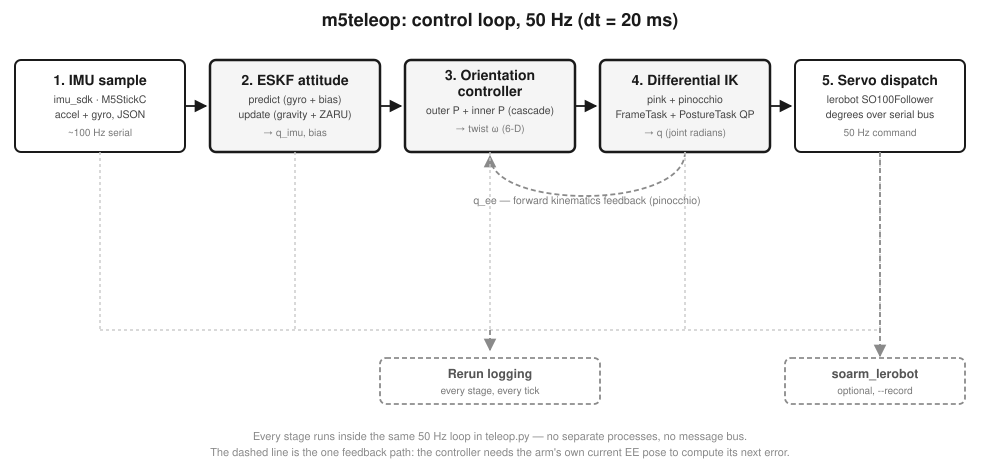

Everything below runs inside m5teleop's teleop.py main loop, on a single
thread, at a fixed --hz (default 50 Hz, dt = 20 ms). There is no
message bus between stages — each tick reads the IMU queue, runs all five stages in order, and writes a
servo command before the next tick starts. That single-thread design is deliberate: it keeps tick-to-tick
jitter low and makes the whole loop traceable from one file.

| Stage | Module | Rate | Produces |
|---|
| 1. IMU sample | imu_sdk | ~100 Hz | raw accel (g) + gyro (°/s) |
| 2. ESKF attitude | m5teleop/imu_ekf.py | 50 Hz | quaternion q_imu, gyro bias |
| 3. Orientation controller | m5teleop/orient_controller.py | 50 Hz | 6-D twist ω |
| 4. Differential IK | m5teleop/ik_solver.py (pink + pinocchio) | 50 Hz | joint configuration q |
| 5. Servo dispatch | lerobot SO100Follower | 50 Hz | per-joint degree commands |
1. IMU sampling
imu_sdk — a background serial thread, decoupled from the control loop
An M5StickC/ESP32 board (MPU6050/6500/6886/9250) streams JSON accelerometer + gyroscope readings over
serial at roughly 100 Hz, with gyro bias calibration done on-device at boot. A reader thread parses
each line into an ImuData record and pushes it onto a queue; the 50 Hz control loop drains
it non-blocking, so a late or dropped IMU frame never stalls a tick — it just falls back to whatever
the EKF last held.
imu: ImuData | None = None
try:
imu = imu_queue.get_nowait()
except queue.Empty:
pass # no new sample this tick — EKF simply isn't updated
if imu is not None:
ekf.step(imu.ax, imu.ay, imu.az, imu.gx, imu.gy, imu.gz, dt)
2. Attitude estimation — error-state Kalman filter
m5teleop/imu_ekf.py — ImuEKF
A raw gyro integral drifts, and a raw accelerometer is noisy and only observes gravity's direction —
never yaw. The ESKF fixes both: it tracks a nominal state (unit quaternion
q̄, gyro bias b̄) with a separate small-angle error state
δx = [δθ, δb] ∈ ℝ⁶ and its 6×6 covariance P. Every tick is predict-then-update:
predict (gyro integration, every tick)
q̄ ← q̄ ⊗ exp(½(ω_meas − b̄) dt) b̄ ← b̄ (bias random walk)
F = [[I − [ω̄×]dt, −I·dt] , [0, I]] (6×6 error transition)
P ← F P Fᵀ + Q
update (accelerometer → gravity direction, when |‖a‖ − 1| ≤ acc_gate)
ĝ = R(q̄)ᵀ · [0, 0, 1]ᵀ H = [[ĝ×], 0] (3×6)
ν = a_meas_norm − ĝ S = H P Hᵀ + σ²_acc·I
K = P Hᵀ S⁻¹ δx = K ν
q̄ ← q̄ ⊗ [1, δθ/2] b̄ ← b̄ + δb P ← (I − KH) P
A third update — ZARU (zero angular-rate update) — fires whenever the raw gyro norm
drops below a threshold: at rest, ω_meas ≈ bias directly, which is what pins down the
yaw-axis bias that gravity alone can never observe (accelerometer updates are blind to rotation about
the gravity vector). All six noise/gate constants are tuned offline by tune_ekf.py
against logged sessions rather than hand-picked.
def step(self, ax, ay, az, gx_dps, gy_dps, gz_dps, dt):
omega = np.deg2rad([gx_dps, gy_dps, gz_dps]) - self._bias
self._predict(omega, dt)
self._update(np.array([ax, ay, az])) # skipped under shock/free-fall
self._update_zaru(np.deg2rad([gx_dps, gy_dps, gz_dps]))
return self._q.copy() # q_imu, [w, x, y, z]
3. Cascade orientation controller
m5teleop/orient_controller.py — OrientationController
Pressing the IMU's button A calls zero_reset(), which memorises the current
q_imu_ref and q_ee_ref — the mapping is coordinate-frame agnostic, so
whatever way you're holding the IMU at that instant becomes "zero." From then on the target EE
orientation is the EE reference rotated by however much the IMU has rotated since reset:
q_delta = q_imu_ref⁻¹ ⊗ q_imu (IMU rotation since zero_reset)
q_target = q_ee_ref ⊗ q_delta (same relative rotation, applied to the EE)
Two proportional loops turn that target into a joint-space-agnostic 6-D twist. The outer loop converts
orientation error to an angular-velocity setpoint using a rotation vector (axis × angle)
rather than Euler angles — it has no gimbal lock and stays well-defined for any error up to 180°:
outer (P): q_err = q_target ⊗ q_ee⁻¹ err = rotvec(q_err) ∈ ℝ³
ω_set = clamp(Kp_outer · err, max_omega) Kp_outer = 2.5 /s
inner (P): ω_actual ≈ vee(Ṙ_ee · R_eeᵀ) (finite-difference of consecutive EE rotations)
ω_cmd = clamp(ω_set + Kp_inner · (ω_set − ω_actual), max_omega) Kp_inner = 0.5
twist = [0, 0, 0, ω_cmd] (zero linear component — this loop only tracks orientation)
The inner loop matters because the outer loop alone only reacts to position error — it has no
way to know the arm is already moving toward the target. Estimating the EE's actual angular velocity
from consecutive forward-kinematics rotations and feeding that back damps overshoot without needing a
second sensor.
if teleop_active and imu is not None:
q_imu = ekf.quaternion
q_ee = _get_ee_quaternion() # from IK solver's current FK
twist, orient_err = orient_ctrl.compute_twist(q_imu, q_ee, dt)
else:
twist = zero_twist # teleop off → arm holds position
4. Differential inverse kinematics
m5teleop/ik_solver.py — IKSolver, wrapping pink + pinocchio
The twist is first integrated into a target end-effector pose, then solved as a weighted least-squares
QP over joint velocities — pink's standard formulation, with two tasks:
target pose: p_target = p_ee + v·dt R_target = exp([ω·dt]×) · R_ee
QP (per tick): minimize Σ_task w_task · ‖J_task v − ẋ_task‖² over v ∈ ℝ⁶
subject to joint position / velocity limits
q ← q ⊕ v·dt (integrate on the configuration manifold)
FrameTask pulls the EE toward target_se3 (position cost 1.0, orientation cost
0.5); PostureTask (cost 1e-3) regularises the null space toward a neutral posture — with
only 5 revolute joints solving a 6-D pose task, the arm is at its kinematic limit, and this term is what
picks one specific solution instead of leaving the system under-constrained. The QP itself is solved
with quadprog.
def step(self, twist_world, dt):
current_ee = self.configuration.get_transform_frame_to_world(self._ee_frame)
new_translation = current_ee.translation + twist_world[:3] * dt
dR = pin.AngleAxis(norm(twist_world[3:] * dt), axis).toRotationMatrix()
self._ee_task.set_target(pin.SE3(dR @ current_ee.rotation, new_translation))
velocity = pink.solve_ik(self.configuration, [self._ee_task, self._posture_task],
dt, solver="quadprog")
self.configuration.integrate_inplace(velocity, dt)
return np.array(self.configuration.q) # joint radians
5. Servo dispatch, logging, and (optional) recording
lerobot SO100Follower · Rerun · soarm_lerobot
The five revolute joints convert radians → degrees and go out over the servo bus through lerobot's
SO100Follower; the gripper is driven separately by a toggle bound to button B, not through
IK. Every stage's intermediate state — raw IMU, EKF quaternion and bias, orientation error, twist, EE
pose, joint configuration — is logged to Rerun on the same tick, so a session can be replayed and
inspected stage-by-stage after the fact. Passing --record adds one more branch: frames are
handed to soarm_lerobot's TeleopRecorder, which detects episode boundaries and
writes LeRobotDataset episodes for later ACT / Diffusion Policy training.
deg_dict = ik.q_to_degrees(q_current) # 5 joints, radians → degrees
arm.send_joint_degrees(deg_dict)
if viz is not None and imu is not None:
viz.log_all_with_tracking(imu=imu, twist=twist, q=q_current,
ee_translation=ee_pose.translation,
ee_rotation=ee_pose.rotation,
ekf_euler=ekf.euler_deg, ekf_bias=ekf.bias_dps,
orient_err=orient_err, ...)